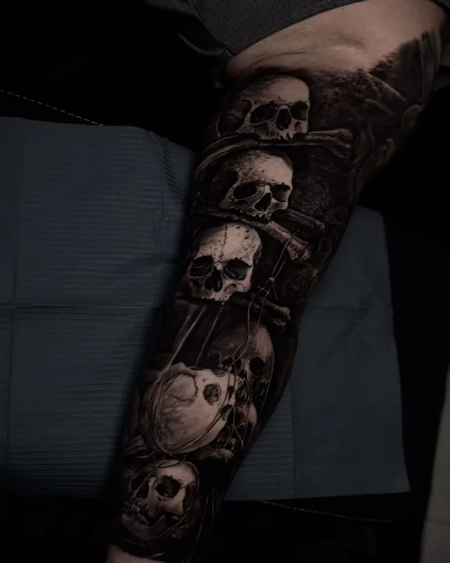
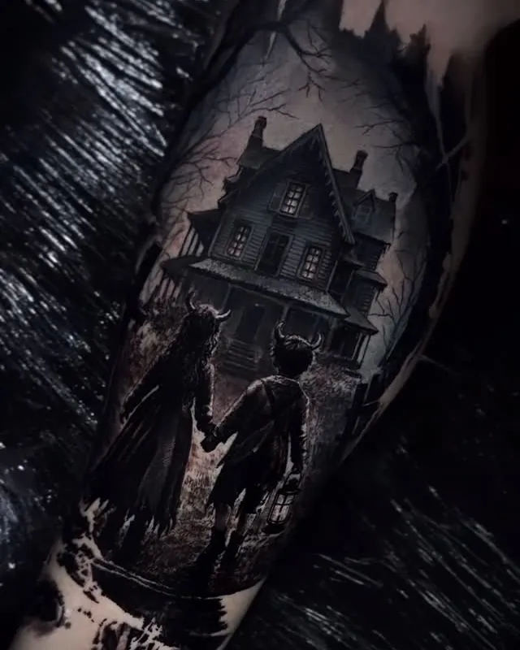
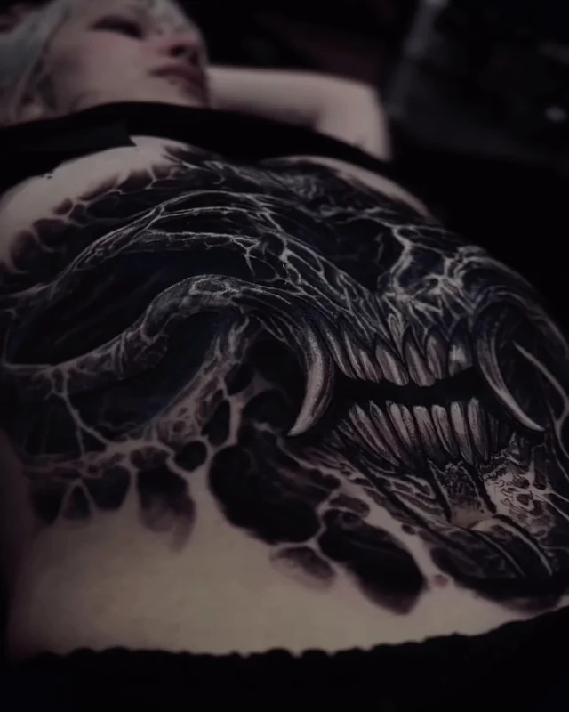
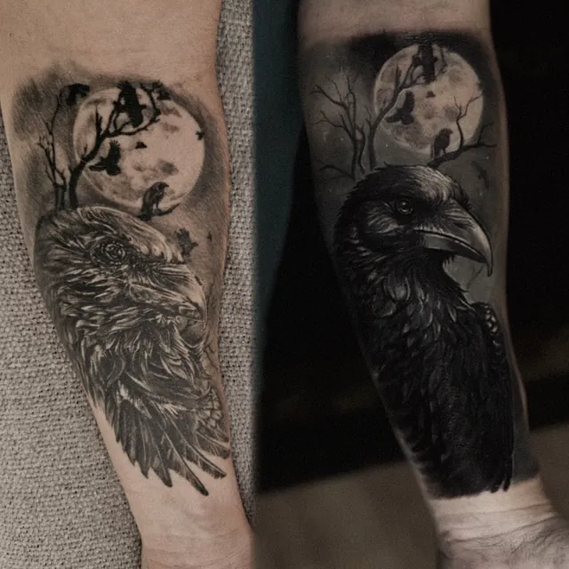
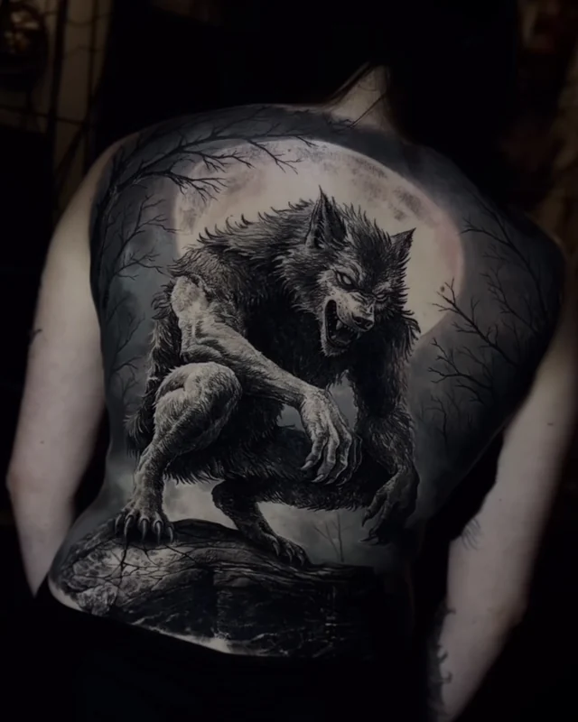
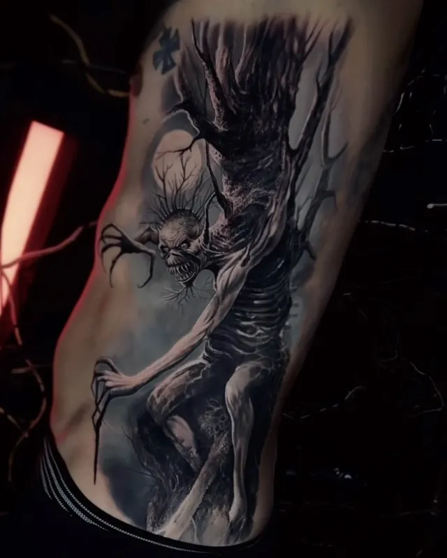
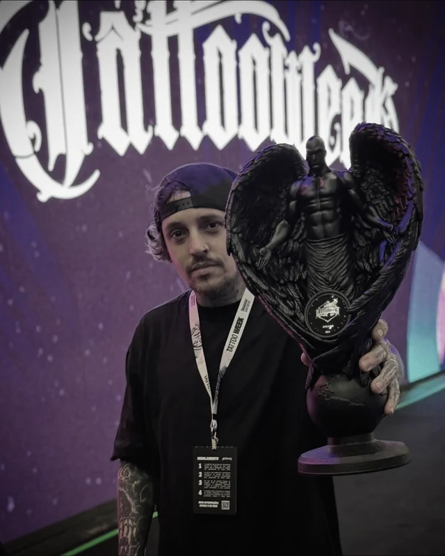
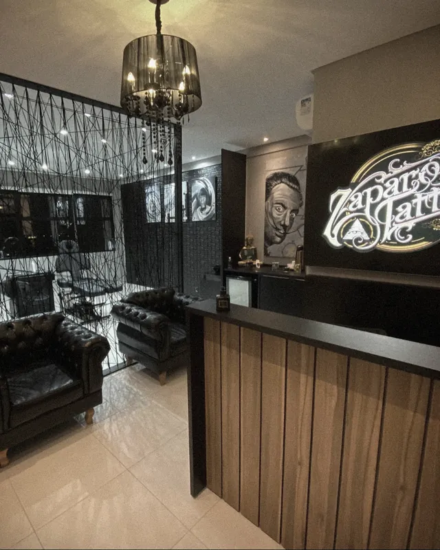
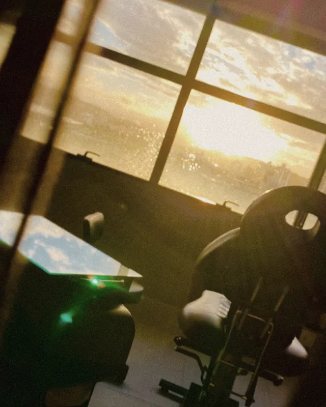

Da Califórnia
Veio dos Estados Unidos sem nenhuma tatuagem e começou logo por esta peça.
Thiago Zaparolli · Tatuador
Projetos autorais para pessoas autênticas.
A origem
“Antes de existir um tatuador, existia uma criança que enxergava beleza onde os outros viam estranheza.”
Desde pequeno, minha relação com a arte fugia do convencional. Enquanto outras crianças desenhavam casas e paisagens, eu desenhava cemitérios, lápides e corvos: um universo obscuro que, por muito tempo, aprendi a esconder.
Mas a arte nunca deixou de fazer parte de mim.
Enquanto trabalhava como estoquista em uma loja de autopeças, meu supervisor descobriu meus desenhos e me incentivou a seguir o caminho da tatuagem.
Comecei do zero, com poucos recursos e muita determinação. Explorei diferentes estilos e técnicas até reencontrar minha verdadeira identidade artística no Dark Art e no realismo preto e cinza.
Hoje, com 12 anos de trajetória, transformo o grotesco e o sombrio em arte, buscando revelar beleza onde muitos não conseguem enxergá-la.
Porque, no fim, não precisei me tornar alguém diferente. Apenas tive coragem de ser quem sempre fui.
Thiago Zaparolli
Processo criativo
“Cada composição é resultado de técnica, criatividade e atenção aos detalhes.”
Acredito que uma tatuagem deve ir além de uma imagem. Ela precisa respeitar a anatomia, valorizar as características individuais e, principalmente, representar a identidade de quem a carrega.
Por isso, cada projeto começa com uma conversa. Busco compreender suas ideias, referências e expectativas, analisando também a região do corpo e as particularidades da sua pele.
Filmes, símbolos, músicas e outras expressões artísticas podem servir de inspiração. Tudo é cuidadosamente interpretado para desenvolver uma composição autoral, pensada exclusivamente para você.
Cada detalhe importa: perspectiva, profundidade, contraste e encaixe anatômico são fundamentais para que a arte tenha impacto visual, equilíbrio e longevidade.
Mais do que reproduzir uma referência, meu objetivo é transformar sua ideia em algo único.
Thiago Zaparolli

Perspectiva
Encaixe anatômicoNa pele
Dark art, realismo, fechamentos e coberturas. Toque numa foto para ver em tela cheia.
Cobertura
Cobrir de verdade não é só esconder o que estava ali. Desenho, estética e estratégia trabalham juntos para que o projeto novo funcione na pele.
Quando a tattoo antiga tem valor para você, dá para manter a alma dela e refazer com mais contraste e profundidade. Respeitar cada etapa é o que deixa o resultado sólido e duradouro.
Mandar foto da tattoo antiga
Feedback
Clientes que viajaram cidades, estados e até países para tatuar com o Zapa.

Da Califórnia
Veio dos Estados Unidos sem nenhuma tatuagem e começou logo por esta peça.

De Brusque
A Nicole encarou quatro dias seguidos de sessão: 30 horas até a fera ficar pronta.

Dez anos de espera
O Natan passou uma década procurando alguém que transformasse o sonho dele em algo vivo.

Tattoo Week 2025
Em novembro de 2025, o Zapa foi convidado para ser jurado na Tattoo Week, em São Paulo, a maior convenção de tatuagem do mundo.
“Subir naquele palco, segurar aquele troféu e olhar para tudo o que construí… é difícil explicar. Me senti vivendo exatamente aquilo que a versão mais jovem de mim dizia que era impossível.”Thiago Zaparolli
Na mesma temporada, fez guests em São Paulo, no Get Inked Studio e no Obscuro, onde fechou umas costas inteiras em cinco dias seguidos.
Ver os trabalhos

Estúdio
O atendimento é num estúdio privado em São José, num prédio comercial com vista para o mar e o pôr do sol.
Do primeiro contato no WhatsApp ao dia da sessão, cada etapa é pensada para que o dia seja dedicado à sua tattoo.
Orçamentos
Orçamentos e agendamentos são feitos só pelo WhatsApp. Com estas informações o projeto já começa a ser planejado.
Alguém da equipe cuida do atendimento, explica como o Zapa trabalha e tira as suas dúvidas.
Uma foto, um símbolo, um verso. Mande imagens de referência para entender o estilo e o tema.
Fotografe onde quer tatuar, demarque a área na foto e diga o tamanho aproximado em centímetros.
A arte é criada sob medida para o encaixe no seu corpo, e a sessão acontece no estúdio privado.
Contato
Tem uma ideia sombria na cabeça?
Mande a referência, a foto do local e o tamanho. O resto começa na conversa.
Chamar no WhatsApp